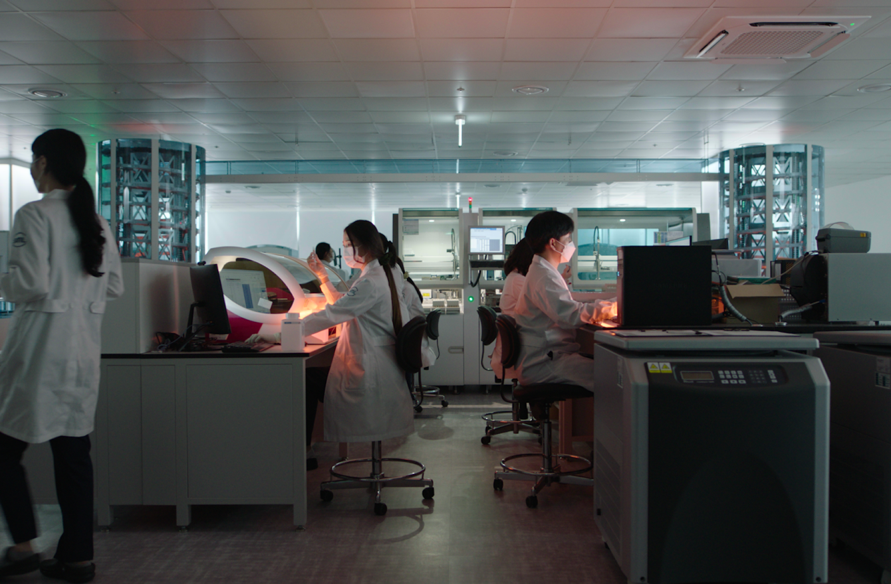
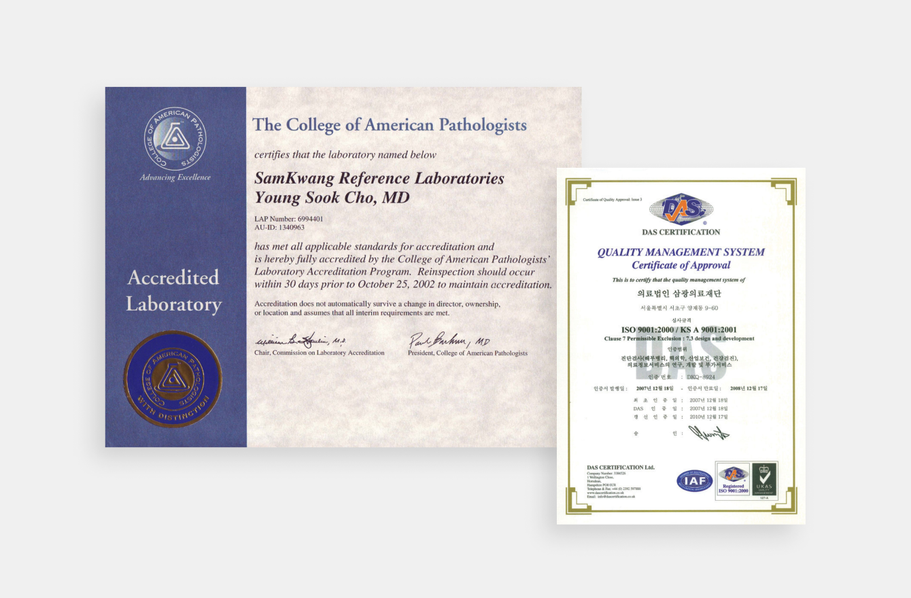

History
2020-NOW

2023
- Expansion and renovation of the laboratory at Seoul main center
- Expansion of the Busan center and establishment of a pathology laboratory
2022
- SML Jungbu center opened, Introduction of GLP Full Automation System for the first time in Korea
- Operation of COVID-19 testing center at Gimpo Int'l Airport
- Operation of COVID-19 testing center in Seoul (Independence Gate Park, Seoul National Cemetery Area)
- Operation of COVID-19 testing center for travelers (Seoul main center, Busan center)
- Chairman Tae-kook Hwang received Prime Minister's Commendation Award on the 50th anniversary of Health day
- Received the Minister of Health and Welfare Award in commemoration of the 5th Life Sharing Week in 2022
- Attended the Blue House luncheon meeting with the quarantine officials of COVID-19
- Supporting educational donation groups for outstanding college students and COVID-19 testing support for global mentoring
- Sponsorship of the construction of Komiso Medical Center for medical support for the underprivileged in Cambodia
2021
- Chairman Tae-kook Hwang was reappointed as President of Korea Association of Referral Laboratories
- Acquired certification as a family-friendly company from the Ministry of Gender Equality and Family
- Awarded the 1st round Industry-University scholarship with The Catholic University of Korea
- Signed MOU with Theragen Etex Group
2020
- 35th anniversary of the foundation of Samkwang Medical Lab
- Samkwang Biotree Group's new vision and C.I. were proclaimed
- Designated as a clinical performance testing institution for in vitro diagnostic medical devices by the MFDS
- Designated as a COVID-19 testing agency by the MFDS
- Implementation of COVID-19 mass testing for enlisted soldier
2010-2019

2019
- SML Busan center opened
- Designated as a Good Clinical Laboratory Practice(GCLP) by the MFDS
2018
- Designated as an institution for special medical examinations
- Signed a clinical testing consignment and technology exchange agreement with Japan's largest clinical testing company SRL
2017
- Acquired the certification of NGS-based genetic panel testing institution
- Signed MOU for mutual cooperation with Korea University Guro Hospital
2016
- Acquired additional certification of NGSP level 1 (HPLC)
- Signed MOU with Catholic University of Korea Seoul St. Mary's Hospital to promote genome-based precision medicine
2015
- 30th anniversary of the foundation of Samkwang Medical Lab
- Establishment of SML’s new vision and core values
2014
- Introduced in-house health keeper room and nursing room
2013
- Signed blood donation and cooperative hospital agreement with Chung-Ang University Hospital
- Signed MOU with WISE MEDITECH for development and commercialization of PCR diagnostic kits
2012
- Established Genome Research Center
2011
- Acquired the certification of genetic testing accuracy evaluation
2010
- Expansion of 3Lab
- Chairman Tae-kook Hwang, received the Minister of Labor Commendation
2000-2009

2009
- Health checkup center opened
- MOU with Catholic University of Korea, Catholic Medical Center
- Registered as a healthcare provider for foreign patients
2008
- Acquired the NGSP level 1 certification
- Introduction of the automated testing system (RSA pro)
2007
- Acquired the ISO 9001 certification
2005
- 20th anniversary of the foundation of Samkwang Medical Lab
- Establishment of new C.I for SML (Samkwang Medical Laboratories)
- Renovation of 1Lab and expansion of 2Lab
2003
- Website renewal and Internet result reporting service launched
2000
- Acquired the CAP certifications in two fields at the same time : anatomical pathology and clinical pathology, for the first time in Korea
- Website opened (www.srl.co.kr) and information service launched
1980-1999

1997
- With the completion of the new building, the Lab. was relocated to Samkwang Building with expansion
1993
- Samkwang Medical Lab, a medical foundation, was established
1991
- Development of digitalized program and construction of lab instrument interface
1989
- Computerization of test results and establishment of local office on-line network
1986
- Joined the Korean Association of External Quality Assessment Service
- Accredited as a certified medical laboratory
1985
- Establishment of Samkwang Clinical Pathology Department in Yongdu-dong, Dongdaemun-gu